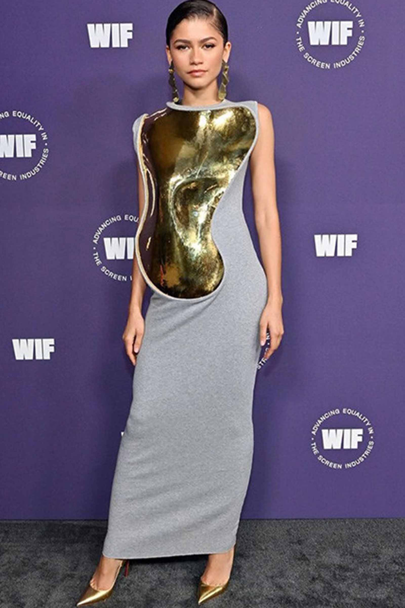
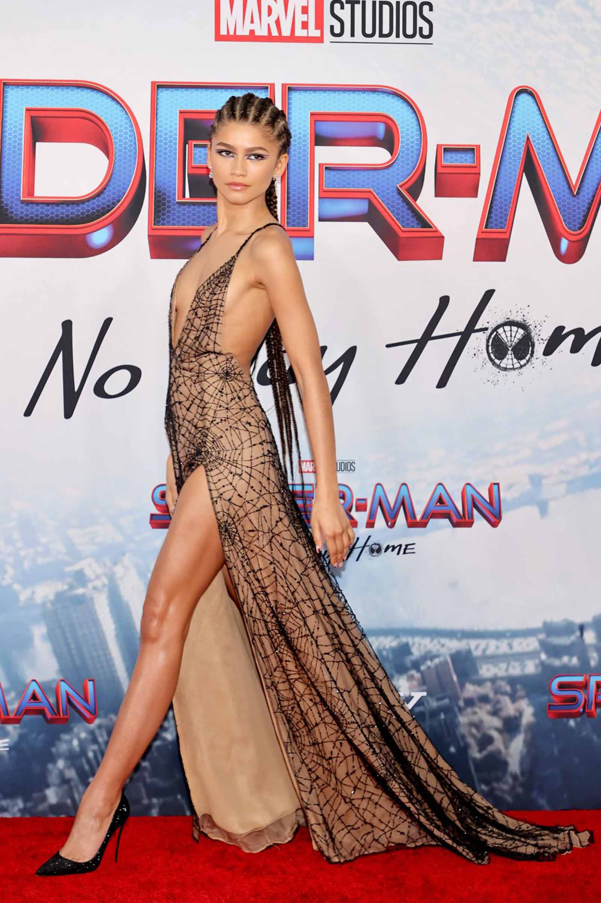
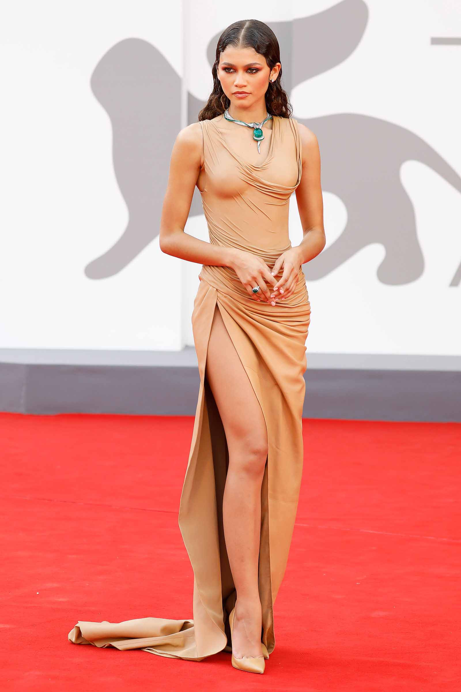
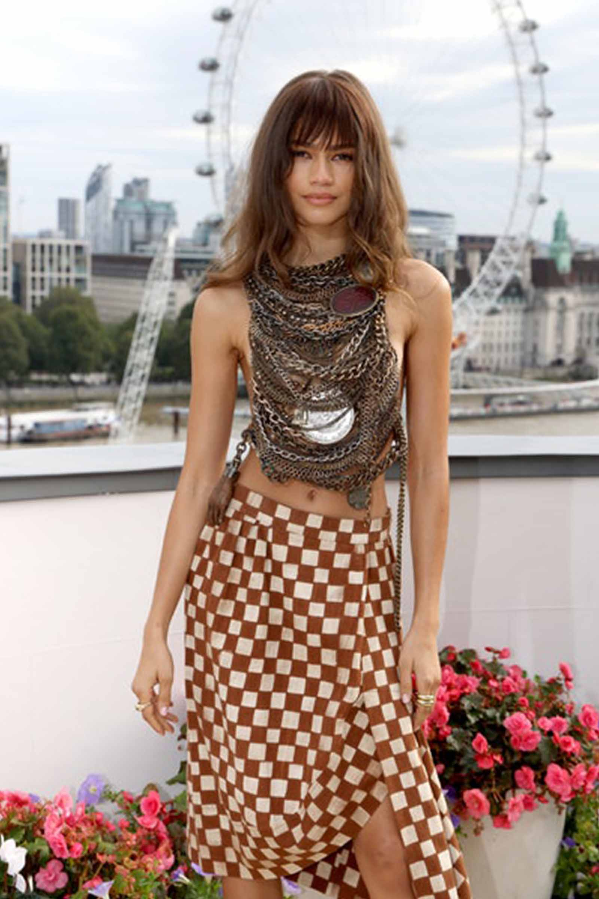
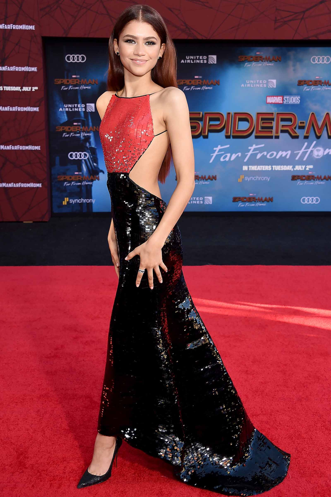
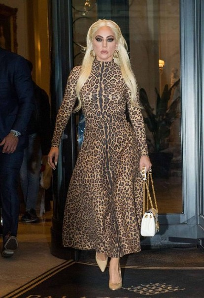
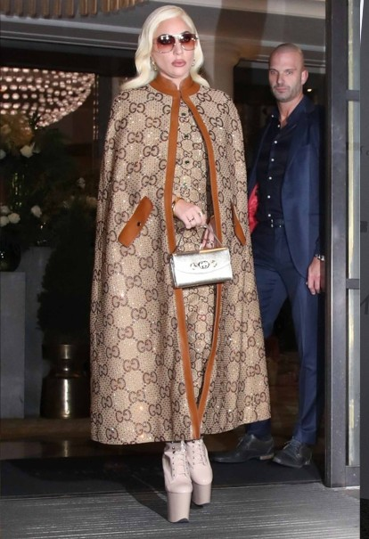
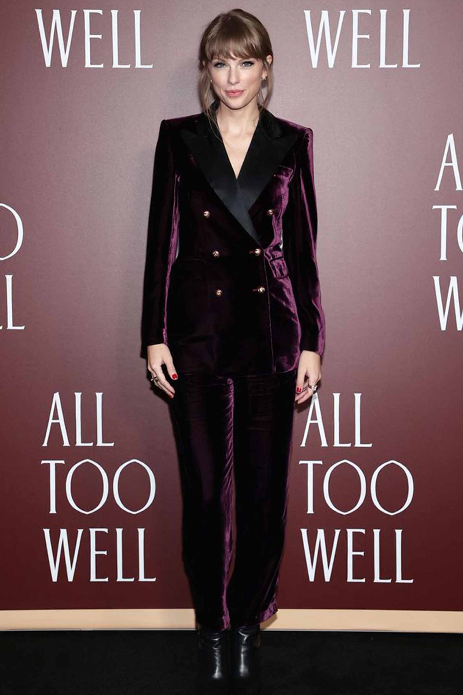

1 / 12

Zendaya as Dr. Octopus but make it Fashion. Refrencing Spider-man.
2 / 12

Zendaya in a dress with a golden plate and referencing Dune.
3 / 12

Can you guess how Zendaya referencing Spider-man?
4 / 12

Zendaya in a dress that feels like was sculpted in a desert. Plot of Dune is located in the desert.
5 / 12

Zendaya on a press conference for Dune wearing metal filled top. The plot of Dune revolves around rare metals.
6 / 12

Zendaya in Spider-man brand colors.
7/12

Lady Gaga dressed as Patrizia Regianni, persona portayed in Gaga's latest film; Gucci.
8 / 12

Lady Gaga dressed as Patrizia Regianni, persona portayed in Gaga's latest film; Gucci.
9 / 12
Lady Gaga dressed as Patrizia Regianni, persona portayed in Gaga's latest film; Gucci.
10 / 12

Taylor Swift in a color of autumn alluding that Red is an autumn album and that plot of the short film happens in autumn.
11 / 12
Taylor Swift wearing red cap and styling hair like she did almost a decade ago when Red was first time out.
1.2 / 12
Taylor Swift wore a lot of lace in original Red version so just before Red TSV dropped she was seen wearing lace.